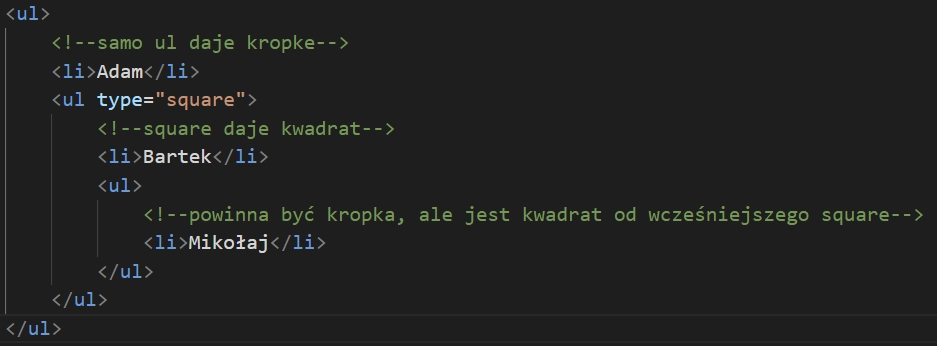

Dział 2
Ucz się dalej frontendu. Dowiedz się co to hiperłącza i poznaj lokalizacje i ścieżki.Znajdziesz tu również informacje o listach i kolorach.
HIPERŁĄCZA
Hiperłącze do strony x-kom
Hiperłącze przenosi do innej strony lub pliku, można przekierowywać
do pdf, do zip i do exe (działa tak, że można je pobrać) Atrybut
target _blank - storna zostanie włączona w innej karcie
Hiperłącze do strony x-kom z target blank
- storna x-kom włączy się w innej karcie
LOKALIZACJA, ŚCIEŻKI
Lokalizacja (ścieżka) względna - działa zawsze, ścieżka
ta to np. "file.html" albo "files/file.html" albo "../file.html",
ścieżka do katalogu, pozycja innego pliku z punktu widzenia bieżącej
pozycji w drzewie katalogów
Lokalizacja (ścieżka) bezwzględna - nie działa
wszędzie, ścieżka lokalna, pełna ściezka dostępu do pliku, np.
E:\Witr_aplik\Strona Internetowa. Ten typ ścieżki do pliku
uwzględnia wszystkie katalogi poczynając od nazwy dysku, na którym
plik się znajduje.
/ - oznacza szukanie czegoś w jakimś folderze zaczynając od folderu
w którym jest plik głowny index.html ./ - oznacza szukanie czegoś w
jakimś folderze zaczynając od folderu w którym jest plik głowny
index.html Jeśli nie ma nić to np. klasa.html to oznacza że plik
głowny index.html znajduje się w tym samym folderze. Jeśli zaczynamy
bez nieczego np. pliki/klasa.html to oznacza to samo co / i ./ ../ -
oznacza wyjście (cofnięcie się) o jeden. Można to pisać kilka razy
np. ../../ żeby wyjśc o 2.
STRUKRURA KATALOGÓW
Katalogów używamy do stworzenia hierarchii (nadrzędne, podrzędne katalogi). Do katalogów dajemy poźniej ścieżki.
ADRESS
address - tworzy sekcje, jest znacznikiem semantycznym, w tej sekcji jest adres mailowy lub inne dane kontaktowe np. numer telefonu, adres URL, adres fizyczny. Tekst w tej sekcji jest domyslnie wyświetlany kursywą. Dodaje się również podział wiersza przed i po address - domyslnie jest to element blokowy.
LISTY - OGÓLNE INFORMACJE
Lista numerowana (upożądkowana) - za pomocą numerów lub
a, b, c, d itd, domyślnie jest ustawiony numeryczny typ cyfr liczb
arabskich.
Lista numerowana (upożądkowana) - ol
Lista nieupożądkowana - np. za pomocą myślników,
kropek, domyślnym typem punktorów jest czarna kropka.
Lista nieupożądkowana - ul Lista definicji - rozwija
termin, tłumaczy głowny termin
Domyslny
- Adam
- Bartek
- Mikołaj
Typ I
- Adam
- Bartek
- Mikołaj
Typ i
- Adam
- Bartek
- Mikołaj
Typ A
- Adam
- Bartek
- Mikołaj
Typ a
- Adam
- Bartek
- Mikołaj
Domyślny
- Adam
- Bartek
- Mikołaj
typ circle
- Adam
- Bartek
- Mikołaj
Typ square
- Adam
- Bartek
- Mikołaj
Typ disc - jest domyślny
- Adam
- Bartek
- Mikołaj
LISTA DEFINICJI
dl - definiuje liste definicji
dt - termin, który wyjaśniamy
dd - wyjaśnienie termiminu
ZAGNIEŻDŻANIE LIST

Kolory
Barwa to fala świetlna br
True color - sposób wyświetlania przestrzeni barw na
ekranie wyświetlacza, umożliwiający uzyskanie 224 czyli 16.777.216
kolorów. Odcienie szarości w komputerze to 28.
RGB
RGB to jeden z modeli przestrzeni barw. R - red, G - green, B -
blue.
Model RGB jest sześcianem. Dzięki połączeniu tych trzech kolorów,
każdy inny kolor może być dalej mieszany. W tworzeniu stron
internetowych używa się kolorów modleu RGB lub szesnastkowego.
CMYK
W drukarkach dodaje się do CMY jeszcze kolor czarny K, ponieważ z
połączenia Cyjan, Magenta, Yellow nie wyjdzie dobry kolor czarny,
tylko szary.
HSV
Bardziej dokładnym modelem jest HSV.
Ma takie wartości jak:
Hue (0 - 360) - odcień barwy
Saturation (0% - 100%) - określa gdzie dany odcień barwy znajduje
się między barwą monochromatyczną (100%) a białą (0)
Value (0-1) - określa jasność od zera do 1
HSV jest oparty o model "stożka", już nie sześcianu.
W grafice komputerowej do tworzenia obrazów, projekotwania używamy
najczęściej modleu HSV.
W tworzeniu stron internetowych używa się kolorów modleu RGB lub
szesnastkowego, raczej nie HSV.
KODOWANIE BARW - KONWERSJA BARW I LICZB
SYSTEM BINARNY, INACZEJ SYSTEM DWÓJKOWY NA DZIESIĘTNY
System Binarny działa na 0 i 1
1011011101 na dziesiętny
Piszemy nad liczbami 0 i 1 potęgi dwójki (1, 2, 4, 8, 16, 32, 64,
128, 256, 512) To co nad zerami się nie liczy. Potrzebne są tylko
pętegi nad 1.
Dodajemy wszystkie liczby kótre były nad jedynkami.
Wynikiem jest liczba która jest w systemie dziesiętnym.
DZIESIĘTNY NA BINARNY
Dzielimy na 2 (uzywająć kreski)
Jeśli wynik dzielenia ma resztę to piszemy 1, jeśli nie ma reszty
(dzieli się równo) to piszemy 0.
Dzielimy przez 2 az dojdziemy do 0.
Liczbę w Binarnym odczytujemy w górę - od końca.
HEX -> RGB
Zmiana polega na konwersji liczb w notacji dziesiętnej na
szesnastkową.
#00 00 00 - pierwsze to warsoć RED, drugie to wartość GRENN, trzecie
to warość BLUE.
Zapis dziesiętny to: 0,1,2,3,4,5,6,7,8,9
Zapis szesnastkowy to: 0,1,2,3,4,5,6,7,8,9, A,B,C,D,E,F
Nie można przekroczyć 10 liczb, więc trzeba było dodać A,B,C,D,E,F.
Więcej niż 225 na witrynach nie musimy umieć zamieniać.
Dzielimy sbie HEX-a na trzy części (#DAF5A5 to będzie: DA, F5, A5)
Kazdą z części mnozymy przez 16 do określonej potęgi (Potęgi 16
wzrastają co jeden od prawej do lewej)
Wynik w kadzdej z cześci dodajemy.
Otrzymaliśmy kolor w RGB (po kolei przepisujemy wyniki w trzech
miejscach)
RGB -> HEX
Pierwszy sposób - potrzebny kalkulator
Dzielimy sobie RGB na 3 części.
Kazdą z częśli dzielimy przez 16. Wynik jest pierwszym znakiem hex-a
w danej części.
Resztę która zosatnie musi zostać pomnożona przez 16. Wynik jest
drugim znakiem hex-a w danej części Potem wszystkie 3 części łączymy
w całość, która będzie W systemie HEX.
Drugi sposób - łatwiejszy
Dzielimy sobie RGB na 3 części.
Sprawdzamy jakie największe mnożenie czegoś przez 16 da nam
najbliższą mniejsza badź równą liczbę do tej która jest w naszej
części. Następnie odejmujemy wynik mnozenia od głownej liczby z
części.
Przykład:
255 -> mieści się wynik mnożenia 15 x 16 = 240.
255 - 240 = 15
Jest to FF, czyli 15 15.